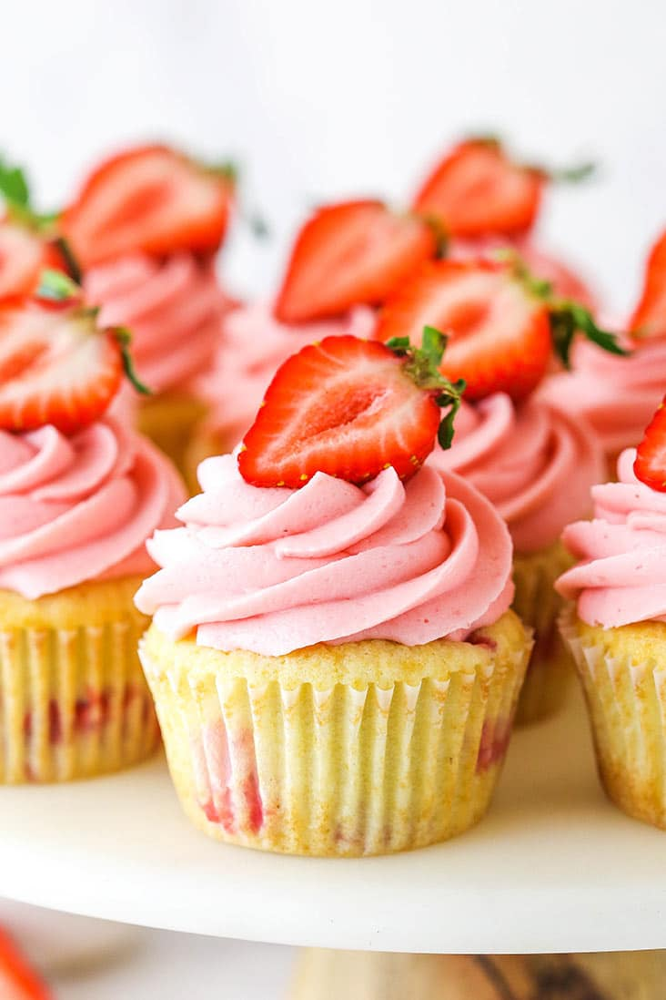

Recipes
Chocolate Cupcake

I asked ChatGPT: "how do you make chocolate cupcakes?"
Ingredients
- 1 and 3/4 cups (220g) all-purpose flour
- 3/4 cup (65g) unsweetened cocoa powder
- 1 and 1/2 teaspoons baking powder
- 1/2 teaspoon baking soda
- 1/2 teaspoon salt
- 1/2 cup (115g) unsalted butter, at room temperature
- 1 cup (200g) granulated sugar
- 2 large eggs
- 2 teaspoons vanilla extract
- 1/2 cup (120ml) buttermilk
Instructions
- Preheat your oven to 350°F (180°C). Line a 12-count muffin tin with paper liners.
- In a medium mixing bowl, whisk together the flour, cocoa powder, baking powder, baking soda, and salt.
- In a separate large mixing bowl, cream together the butter and sugar until light and fluffy, about 3 minutes. Beat in the eggs, one at a time, then stir in the vanilla extract.
- Gradually mix in the dry ingredients, alternating with the buttermilk, until just combined.
- Divide the batter evenly among the prepared muffin cups.
- Bake for 18-20 minutes, or until a toothpick inserted into the center of a cupcake comes out clean.
- Remove the cupcakes from the oven and let them cool in the pan for 5 minutes, then transfer them to a wire rack to cool completely.
- Once the cupcakes are cooled, you can frost them with your favorite frosting.
Enjoy your homemade chocolate cupcakes!
Strawberry Cupcake

I asked ChatGPT: "how do you make strawberry cupcakes?"
Ingredients
- 1 and 3/4 cups (220g) all-purpose flour
- 1 and 1/2 teaspoons baking powder
- 1/2 teaspoon salt
- 1/2 cup (115g) unsalted butter, at room temperature
- 1 cup (200g) granulated sugar
- 2 large eggs
- 2 teaspoons vanilla extract
- 1/2 cup (120ml) milk
- 1 cup (150g) chopped fresh strawberries
Instructions
- Preheat your oven to 350°F (180°C). Line a 12-count muffin tin with paper liners.
- In a medium mixing bowl, whisk together the flour, baking powder, and salt.
- In a separate large mixing bowl, cream together the butter and sugar until light and fluffy, about 3 minutes. Beat in the eggs, one at a time, then stir in the vanilla extract.
- Gradually mix in the dry ingredients, alternating with the milk, until just combined.
- Gently fold in the chopped strawberries.
- Divide the batter evenly among the prepared muffin cups.
- Bake for 18-20 minutes, or until a toothpick inserted into the center of a cupcake comes out clean.
- Remove the cupcakes from the oven and let them cool in the pan for 5 minutes, then transfer them to a wire rack to cool completely.
- Once the cupcakes are cooled, you can frost them with your favorite frosting.
Enjoy your homemade strawberry cupcakes!